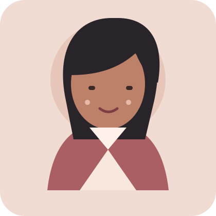
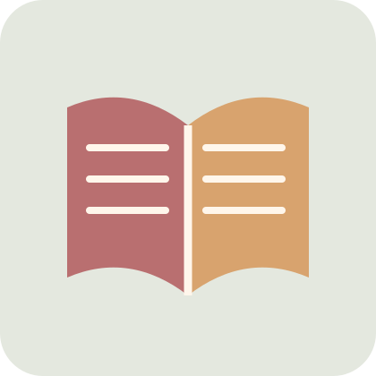
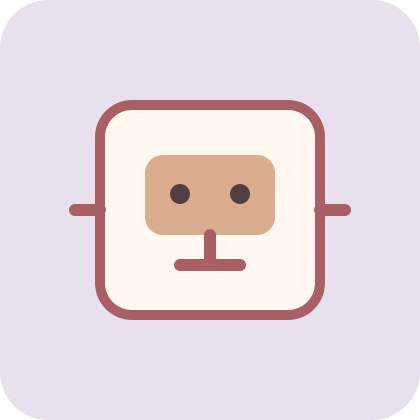
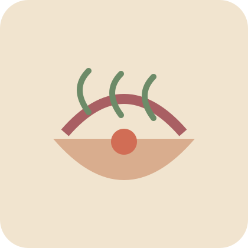
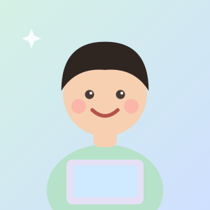
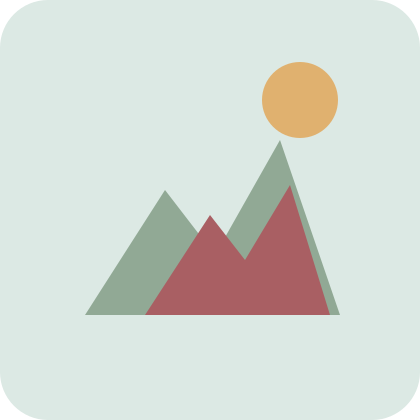
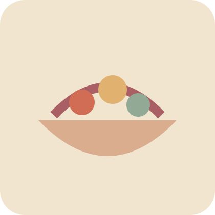

01
Bachelor of Computer Applications
Saveetha University
Built my foundation in computer applications and developed an interest in technology and problem-solving.
HELLO, I'M
Curious mind. Creative soul. Impactor at Psiog.
I enjoy learning, building meaningful things, and finding inspiration in everyday moments. Here's a little glimpse into my professional journey and the things I love.

THE PATH SO FAR
Every experience has added a new skill, a new perspective, and a new reason to keep moving forward.
Saveetha University
Built my foundation in computer applications and developed an interest in technology and problem-solving.
SRM University
Deepened my technical knowledge while exploring practical applications and opportunities to grow.

Philips
Gained hands-on exposure to Robotic Process Automation and learned how technology can improve everyday workflows.

Psiog
Continuing to learn, collaborate, take on challenges, and make a positive impact through my work.
A FEW FAVOURITE THINGS
The little interests that make an ordinary day feel special.

All kinds of music, depending on the mood and the moment.
Telugu and South Indian favourites like Godavari and Aand, plus series such as When Life Gives You Tangerines and Squid Game.

Italian flavours and South Indian food are always close to my heart.
Dream destinations: Vietnam, Dubai, and Paris. More places to explore, more memories to make.
MY CONSTANT SUPPORT
My favourite people, my biggest cheerleaders, and my home in every season.

My strongest support system and lifelong inspiration.

A built-in friend who is also making his own way at work.

Wisdom, warmth, stories, and unconditional love.
OFF THE CLOCK
Simple experiences that recharge me and keep life colourful.

Trying recipes and making something delicious.

Moving to the music and enjoying the moment.

Finding new corners, views, and experiences.
A good story and a cosy evening.

Discovering new dishes and favourite flavours.
HAVE A GOOD DAY — AND SAY HELLO
Always happy to connect, exchange ideas, and learn from new people.